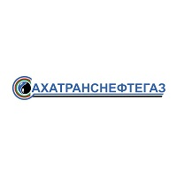
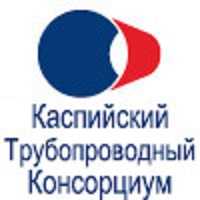
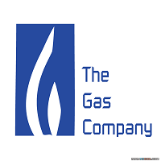
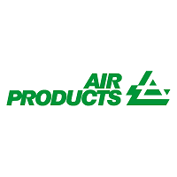
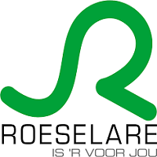

GeoSCADA Expert используется во многих предприятиях России и за рубежом. В основном это предприятия легкой, перерабатывающей и пищевой промышленности, а также при автоматизации энергоучета зданий, водоканалов, систем пожаротушения. Ниже представлен небольшой список предприятий, в которых используют данную систему.
1. Новоуренгойское ГКМ (ООО «Газпром добыча Уренгой») (ХМАО, Новый Уренгой)

Рисунок 1 – Логотип ООО «Газпром добыча Уренгой»
2. ОАО «Сахатранснефтегаз» (Якутия)

Рисунок 2 – Логотип ОАО «Сахатранснефтегаз»
3. ЗАО «Каспийский трубопроводный консорциум - Россия» (Краснодарский край, г.Новороссийск)3. ЗАО «Каспийский трубопроводный консорциум - Россия» (Краснодарский край, г.Новороссийск)

Рисунок 3 – Логотип ЗАО «Каспийский трубопроводный консорциум - Россия»
4. Southern California Gas (США, San Dimas, CA)

Рисунок 4 – Логотип Southern California Gas
5. Air Products (Франция)

Рисунок 5 – Логотип Air Products
6. REMO Foods Roeselaere (Бельгия)

Рисунок 6 – Логотип REMO Foods Roeselaere
 GeoSCADA Expert
GeoSCADA Expert